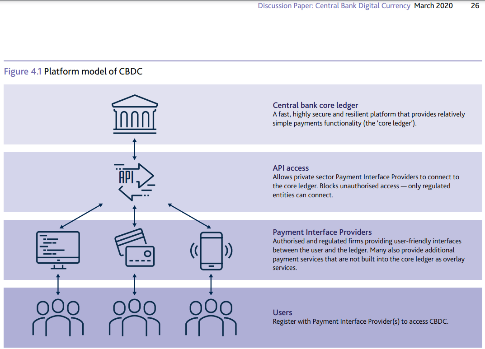
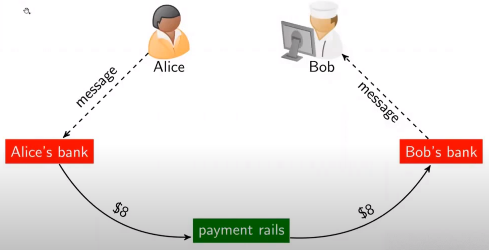
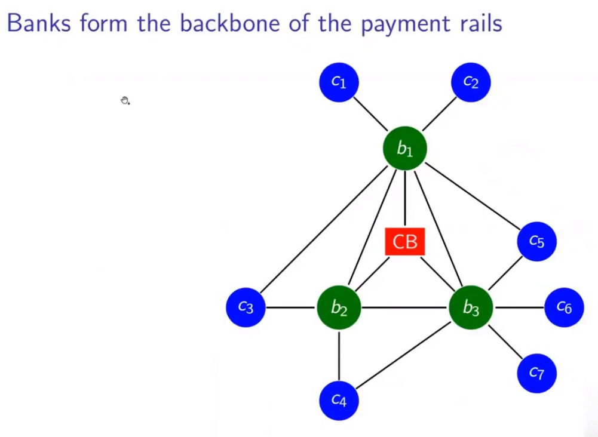

<!doctype html>
<html lang="en">
  <head>
    <meta charset="utf-8">

    <title>Future of Blockchain</title>

    <meta name="author" content="Dhruvin Parikh">

    <meta name="apple-mobile-web-app-capable" content="yes" />
    <meta name="apple-mobile-web-app-status-bar-style" content="black-translucent" />

    <meta name="viewport" content="width=device-width, initial-scale=1.0, maximum-scale=1.0, user-scalable=no, minimal-ui">

    <link rel="stylesheet" href="../../reveal.js/css/reveal.css">
    <link rel="stylesheet" href="../../reveal.js/css/theme/black.css" id="theme">

    <!-- Code syntax highlighting -->
    <link rel="stylesheet" href="../../reveal.js/lib/css/zenburn.css">

    <!-- Printing and PDF exports -->
    <script>
      var link = document.createElement( 'link' );
      link.rel = 'stylesheet';
      link.type = 'text/css';
      link.href = window.location.search.match( /print-pdf/gi ) ? '../../reveal.js/css/print/pdf.css' : '../../reveal.js/css/print/paper.css';
      document.getElementsByTagName( 'head' )[0].appendChild( link );
    </script>
    <script src="./sha1.js"></script>

    <!--[if lt IE 9]>
    <script src="../reveal.js/lib/js/html5shiv.js"></script>
    <![endif]-->

    <style>
      .reveal .slides h1, .reveal .slides h2, .reveal .slides h3 {
        text-transform: none;
      }

      .two-column {
        display: flex;
        flex-wrap: wrap;
      }

      .two-column em {
        margin: 20px;
      }

      .reveal .big-and-bold {
        font-weight: bold;
        font-size: 135%;
      }

      .reveal .shrunk-a-bit {
        font-size: 90%;
      }

      .reveal .shrunk-a-bit pre {
        width: 100%;
      }

      .reveal pre {
        width: 100%;
      }

      .reveal .highlight {
        color: yellow;
        font-weight: bold;
      }

      .reveal .highlightRed {
        color: red;
        font-weight: bold;
      }
      .left {
        left:-8.33%;
        text-align: left;
        float: left;
        width:50%;
        z-index:-10;
      }

      .right {
        left:31.25%;
        top: 75px;
        text-align: left;
        float: right;
        z-index:-10;
        width:50%;
      }
    </style>
  </head>

  <body>
    <div class="reveal">
      <div class="slides">

<!------------------------------------------------------->


<section data-markdown><script type="text/template">

## CSBC 2000 - Essentials of Blockchain Development and Security

### Class 12: Future of Blockchain

*Dhruvin Parikh*

</script></section>

<section data-markdown><script type="text/template">

## Recap

* Cryptoeconomics
* Cost of verification/networking
* Use cases

</script></section>


<section data-markdown><script type="text/template">

## Class Plan

* A2 Solution
* Blockchain Interoperability
* Central Bank Digital Currency

</script></section>

<section data-markdown><script type="text/template">

## Review of Blockchain


</script></section>

<section data-markdown><script type="text/template">

## Review of Blockchain

* Consensus started out with Nakamoto (PoW) for single use (UTXO)
* Moved to PoW for multiple use
* Then came PoS with multiple use
* Then DPoS
* PoSt
* ...

</script></section>

<section data-markdown><script type="text/template">

## The Need for Interoperability

* Blockchain applications on different platforms are disparate
* E.g. EOS application has nothing to do with an Ethereum application
* As a result, blockchain as a GPT scales only with the largest blockchain at some point in time
* Thus, there is a need for interoperability between blockchain impls to effectively incorporate blockchain as a GPT

</script></section>

<section data-markdown><script type="text/template">

## The Internet

* In the beginning, the internet was a group of disparate networks (LANs/MANs) that didn't talk to each other
* Once there was a standardized protocol (TCP/IP), all these networks could translate their "language" to the universal "language"
* Following this, WWW was created using HTTP, HTML and other app-layer tools

</script></section>


<section data-markdown><script type="text/template">

## Blockchain Interoperability

* Blockchain interoperability is the ability to share, see, and access information across different blockchain networks without the need for an intermediary
* Blockchain projects that want to implement interoperability into their platform aim to create an ecosystem that will enable different blockchains to easily communicate with each other

</script></section>

<section data-markdown><script type="text/template">

## Blockchain Interoperability


 
</script></section>


<section data-markdown><script type="text/template">

## Blockchain Interoperability


</script></section>

<section data-markdown><script type="text/template">

## Blockchain Interoperability

* The vision of interoperable enterprise blockchains thereby rests on a number of functionalities and abilities: 
 * Integration with existing systems
 * Initiate transactions on other networks
 * Conduct transactions with other chains
 * Transact between deployments on the same chain by integrating apps and making it easy to switch one underlying platform for another

</script></section>


<section data-markdown><script type="text/template">

## Blockchain Interoperability

* Interoperability for blockchain is not only desirable, but critical
* Interoperability is crucial in any software system – it simply won’t work to its full potential if it can’t work with other software
* Interoperability would enable smooth information sharing, easier execution of smart contracts, a more user-friendly experience, the opportunity to develop partnerships, and the sharing of solutions

</script></section>

<section data-markdown><script type="text/template">

## Case Study: Abu Dhabi Digital Authority

* WEF+UAE+Deloitte Govt blockchain study (Jan 2020)
* ADDA has been developing a government blockchain platform to enable and support a secure, trusted dataexchange mechanism between Abu Dhabi government entities and any other external organizations

</script></section>

<section data-markdown><script type="text/template">

## Case Study: Abu Dhabi Digital Authority

* The blockchain platform would enable a “data marketplace” for the government, allowing a value-driven data-exchange programme. 
* The blockchain platform is being designed with a unique abstraction layer that acts as a connector to enable communication between various blockchains, while minimizing the underlying complexities of each individual system

</script></section>

<section data-markdown><script type="text/template">

## Case Study: Abu Dhabi Digital Authority

* This layer is targeted to address the challenge of lack of interoperability between different ledgers with different blockchain solutions, while enabling secure data sharing
* Let us look at ket deployment challenges (next slide)
</script></section>


<section data-markdown><script type="text/template">

## Key deployment challenges (1/2)

* Lack of clarity on standards, interoperability and other technical issues: 
 * To date, there is still a significant degree of uncertainty about the direction of emerging technical standards for blockchain, along with regulation, interoperability and other issues. 
 * These collective uncertainties add to the complexity of planning blockchain projects, which is a significant challenge to government organizations

</script></section>

<section data-markdown><script type="text/template">

## Key deployment challenges (2/2)

* Awareness and expertise across organizations:  
 * When considering a use case to be implemented, the level of awareness and capabilities with regards to blockchain is highly variable across involved organizations. 
 * Since blockchain entails collaboration by its nature, the project moves only as quickly as the slowest link in the chain. 
 * Therefore, ensuring a consistent level of understanding, expertise and engagement across participants is a significant challenge

</script></section>


<section data-markdown><script type="text/template">

## Case Study: Abu Dhabi Digital Authority


</script></section>


<section data-markdown><script type="text/template">

## Blockchain Interoperability

* *“Interoperability and compatibility issues are key to address in a world after the coronavirus pandemic. The challenge of interoperability is not only a technology problem, but even more so a problem in terms of governance, data ownerships and commercial business models.”* - Nadia Hewett, Blockchain and Digital Currency Project Lead at the World Economic Forum

</script></section>

<section data-markdown><script type="text/template">

## Blockchain Interoperability Solutions

* Most interoperability solutions until recently were focused on chain interoperability across public blockchains
* The focus however has increasingly shifted towards solutions for interoperability between private networks and/or between private networks and public blockchains.

</script></section>


<section data-markdown><script type="text/template">

## Blockchain Interoperability Solutions

* One way to solve interoperability is to use a separate blockchain as a bridge to facilitate cross-communication. This is a third blockchain that sits in the middle and maintains a ledger of the transactional and messaging activity between the two

</script></section>

<section data-markdown><script type="text/template">

## Blockchain Interoperability Solutions

* Interoperability tools that are used range from hub and spoke, decentralised finance (DeFi) and general-purpose bridges
* Another way to facilitate interoperability between systems is with off-chain or middleware systems. This so-called non-blockchain interoperability approach uses tools including atomic swaps, oracles and state channels

</script></section>


<section data-markdown><script type="text/template">

## Blockchain Interoperability: Mashup APIs

* Blockchain networks and solutions could be brought together for an organization via a so called “mashup” application
* They only have to interact with one consistent application programming interface (API) and not an API for every network

</script></section>


<section data-markdown><script type="text/template">

## Blockchain Interoperability: Mashup APIs

* This mashup application can include a variety of capabilities defined in data models and smart contracts, but fundamentally, it will serve as “the glue that joins various networks together”
* However, APIs do not presuppose a governance structure, which makes them flexible and expedient but also a poor choice for organizing interoperability in the long run

</script></section>

<section data-markdown><script type="text/template">

## Blockchain Interoperability: Network-of-Networks

* The most efficient and scalable way to build interoperability is through the joint effort of establishing industry standards as well as identifying a network of networks structure that industry networks can converge around

</script></section>

<section data-markdown><script type="text/template">

## Blockchain Interoperability: Network-of-Networks

* An organization's blockchain network represents a ”web” of interconnected networks. This architecture would allow an organization to connect and transact with multiple solutions, not restrained to a single network, and open up a market of interoperability across solutions

</script></section>

<section data-markdown><script type="text/template">

## Blockchain Interoperability: Network-of-Networks

* By unlocking the power of the peer, organizations can use their peer to connect into multiple blockchain networks via channels. This significantly reduces the complexity and optimizes an organizations interaction with different blockchain networks

</script></section>


<section data-markdown><script type="text/template">

## Chainlink

* Chainlink is a decentralised oracle network; an interoperability solution to facilitate secure and trustless communication between all disparate blockchain systems. The resources mostly revolve around off-chain data to trigger smart contracts and settlement outputs like established payment systems and cloud backend
 * E.g. Get Crypto Prices in your Smart Contracts, Generate Verifiable Random Numbers, Call External APIs from Smart Contracts

</script></section>


<section data-markdown><script type="text/template">

## Chainlink

* Chainlink nodes can format messaging and data from public APIs into a readable format for smart contracts. These nodes can connect to any API, whether it is a blockchain, enterprise system, Web API, or IoT device
* Chainlink also collaborates with other interoperability protocols. E.g. Polkadot, Ethereum, Wanchain is integrating with Chainlink to provide off-chain  data to their on-chain smart contracts

</script></section>


<section data-markdown><script type="text/template">

## Cosmos

* Cosmos aims to act as an ecosystem of blockchains that can scale and interoperate with each other 
* Cosmos is a smart contract platform that has prioritized interoperability as a critical component of their blockchain design. Their architecture is based on the so-called ‘hub-and-spoke’ system whereby a series of ‘spoke’ chains connect to a ‘central’ hub by means of inter-blockchain communication.

</script></section>


<section data-markdown><script type="text/template">

## Cosmos

* Cosmos is heavily reliant on validators to provide interoperability. It uses Tendermint consensus and uses both member chains and Peg-Zones for existing chains to improve the overall ecosystem. Their end goal is to create an ‘internet of blockchains’ – a network of blockchains that can communicate with one another in a decentralised way

</script></section>


<section data-markdown><script type="text/template">

## Cosmos

* The implementation of the IBC (Inter Blockchain Communication) protocol will allow communication between a central hub and the chains linked to the network, also called Zones. It will first only concern the interoperability of chains built on top of Cosmos SDK platform

</script></section>


<section data-markdown><script type="text/template">

## Hybrix

* Hybrix is an open-source cross-chain solution aimed to make it easier to make cross-chain transactions, and also increase the level of ease for developers who want to offer multi-chain platforms
* Hybrix also has the “HY” token that represents an identical block of a chain and can be used to reconcile data across the entire crypto complex
* Tokens serve as bridges that allow transactions to be conducted on either a single chain or multi-ledger systems

</script></section>

<section data-markdown><script type="text/template">

## Hybrix

* Hybrix utilizes existing languages to build its protocol and interface
* Hybrix has amplified its capacity to adapt 31 major blockchains and about 400 tokens

</script></section>


<section data-markdown><script type="text/template">

## Polkadot

* Polkadot facilitates transactions and data exchange, aiming to promote interoperability between blockchains 
* It uses DPoS consensus and employs "required validators" (which can arguably lead to a certain degree of centralization)
* Polkadot is similar to Cosmos as it allows communication between the relay chain and the parachains of Polkadot’s network

</script></section>


<section data-markdown><script type="text/template">

## Polkadot

* Additionally, scalability will be taken to a whole new level by running multiple parallel chains. This is a bit different from other projects which are looking to bridge the gap between blockchains as well.

</script></section>

<section data-markdown><script type="text/template">

## Wanchain

* Wanchain network allows interoperability between Type I blockchains like Bitcoin, Ethereum and EOS. Wanchain aims to link and facilitate communication between the different blockchains as much as possible
* Wanchain is already functional and allows communication and exchange of value and data between public and private blockchains through storeman nodes and the T-Bridge framework

</script></section>


<section data-markdown><script type="text/template">

## Wanchain

* The storeman node system combines two cryptographic concepts that ensure security and confidentiality of network transactions: secure multi-party computation and “Shamir’s secret sharing”
* The Wanchain project recently announced the integration of EOS blockchain and the implementation of the T-bridge framework
* Wanchain is not fully decentralized but aims to be in the near future

</script></section>


<section data-markdown><script type="text/template">

## Real World Interop: Ava

* AVA is an open-source platform for building and deploying decentralized finance (DeFi) apps and enterprise-grade blockchain solutions that can be run in one interoperable, highly scalable ecosystem
* Interoperability between different DLT networks works through the AVA protocol (Avalanche consensus)

</script></section>


<section data-markdown><script type="text/template">

## Real World Interop: Ava

* Coupled this protocol with a network model that enables the system to span permissioned and permissionless networks, making AVA a self-serve platform for new blockchains and digital assets
* Instead of one network with thousands of tokens, the AVA ecosystem is one platform with thousands of subnetworks and tokens on each subnetwork
* AVA’s infrastructure allows anyone to build their own private, public, permissioned or permissionless blockchain networks or subnetwork, so-called “subnets"

</script></section>

<section data-markdown><script type="text/template">

## Real World Interop: Quant

* Quant Network, a technology provider delivering blockchain enterprise-grade interoperability for secure exchange of information and digital assets has partnered with Oracle
* Quant will use Oracle Cloud to run mission critical business applications on interoperable DLTs that will be powered by Overledger, which connects global networks to blockchain-based platforms. Banking institutions may deploy an extensive set of APIs that aim to cover all areas across the banking lifecycle

</script></section>


<section data-markdown><script type="text/template">

## Real World Interop: Quant

* *“Quant helps Oracle’s customer banks by providing a single API to all supported blockchains to power interoperability across platforms. Giving clients choice and flexibility to freely use any blockchain technology and go cross-platform with only three lines of code. Clients gain benefits of market access, new products and revenue streams without the challenges of managing complex underlying blockchain technology stacks.”* Gilbert Verdian, CEO at Quant Network

</script></section>

<section data-markdown><script type="text/template">

## Real World Interop: Sia and Quant

* Banking users of SIA's private blockchain, SIAchain can link with other distributed ledgers following successful testing of interoperability via Quant Network's Overledger 

</script></section>


<section data-markdown><script type="text/template">

## Real World Interop: Sia and Quant

* This integration provides the ability to bridge permissioned blockchain instances between SIAchain's 580 European network nodes and other external networks in order to have crossplatform applications and services covering the likes of notarisation, payments and KYC

</script></section>


<section data-markdown><script type="text/template">

## Real World Interop: Sia and Quant

* SIA is a European leader in the design, creation and management of technology infrastructures and services for Financial Institutions, Central Banks, Corporates and the Public Sector

</script></section>

<section data-markdown><script type="text/template">

## Real World Interop: Sia and Quant

* *“The achievement of a fully interoperable blockchain network, through our collaboration with Quant Network, is another key-element in our path of bringing innovation and state-of-the-art technologies for supporting banks, financial institutions, corporates and public administration bodies to extend their capabilities in integrating different DLT business applications."* Daniele Savarè, innovation & business solutions director SIA

</script></section>


<section data-markdown><script type="text/template">

## CBDC



</script></section>

<section data-markdown><script type="text/template">

## CBDC

* The majority of payment transactions are likely to rebound sharply as lockdowns lift. However, the move from cash to e-payments will probably continue, especially in developing economies

</script></section>


<section data-markdown><script type="text/template">

## CBDC

* This is despite the fact that cash in circulation has increased on a global scale by the largest percentage since the financial crisis 2008. According to McKinsey, this development takes place partly because lower cash usage is desirable for [commercial] banks, given the cost of handling cash is higher than the revenue it generates for them, while e-payments generate incremental revenue.

</script></section>

<section data-markdown><script type="text/template">

## CBDC: Payments now



</script></section>


<section data-markdown><script type="text/template">

## CBDC: Payments now



</script></section>

<section data-markdown><script type="text/template">

## CBDC: Payments now


</script></section>


<section data-markdown><script type="text/template">

## CBDC: Payments now


</script></section>

<section data-markdown><script type="text/template">
## 15 minute break
</script></section>


<section data-markdown><script type="text/template">
## CBDC: The role of blockchain

* Most central banks have shied away from providing CBDC directly to everyone in the economy
* There have been serious prototypes and proposals for “hybrid” or “synthetic” CBDC, by which private-sector actors would be responsible for payment services associated with one or more digital currencies backed by the central bank
* Two variants of this

</script></section>


<section data-markdown><script type="text/template">
## CBDC: Govt issued

* The central bank issues CBDC “tokens” to one or more payment service providers who redistribute the tokens to a broad set of customers, along with payment apps and other infrastructure
* The CBDC tokens are analogous to paper currency, as direct claims on the central bank, but are transferred electronically

</script></section>

<section data-markdown><script type="text/template">
## CBDC: Govt issued

* Token holdings are recorded in ledger accounts maintained by the central bank or by payment service providers. The payment service providers could be banks or technology firms

</script></section>

<section data-markdown><script type="text/template">
## CBDC: Govt issued

* Interoperability requires that all actors in the economy can seamlessly transfer the CBDC to each other, implying a common payment technology or strong standardization. The Peoples Bank of China has begun to test a related form of CBDC called DC/EP (digital currency/electronic 3 payment). The Bank of England has published design principles for a similar approach to CBDC

</script></section>

<section data-markdown><script type="text/template">
## CBDC: Hybrid  


</script></section>

<section data-markdown><script type="text/template">

## CBDC: Synthetic

* Payment service providers can be permitted to back their own private-sector digital currencies 100% with deposit accounts at the central bank
* In effect, each of the resulting private-sector digital currencies takes the form of narrow payment-bank deposits
* In this case, interoperability requires not only interoperable payment technologies, but also perfect fungibility of the various resulting private digital currencies
* This raises additional technical challenges

</script></section>


<section data-markdown><script type="text/template">

## CBDC: Synthetic


</script></section>


<section data-markdown><script type="text/template">

## Case study: Bank of Canada Project Jasper

* It was the first time in the world that a central bank participated in a distributed ledger technology (DLT) experiment in partnership with the private sector
* This collaborative research initiative between the public and private sectors aims to understand how DLT could transform the wholesale payments system

</script></section>


<section data-markdown><script type="text/template">

## Case study: Bank of Canada Project Jasper

* In the first phase of the project, investigated the use of DLT for the settlement of high-value interbank payments
* Phase 2 of the project involved rebuilding the platform using an alternative form of DLT to further test the efficiency of this technology for the clearing and settlement of high-value interbank payments

</script></section>


<section data-markdown><script type="text/template">

## Case study: Bank of Canada Project Jasper

* Phase 3 explored the potential benefits from integrating this “cash on ledger” with other assets, such as foreign exchange and securities

</script></section>


<section data-markdown><script type="text/template">

## Case study: Bank of Canada Project Jasper

* Phase 4 saw BoC partnered with the Monetary Authority of Singapore and the Bank of England to work on a cross-border, cross-currency settlement system. This collaboration combines Project Jasper and Singapore’s Project Ubin, with a view to using DLT to make cross-border payments faster and less expensive

</script></section>


<section data-markdown><script type="text/template">

## End of Class

</script></section>


<!------------------------------------------------------->


      </div>

    </div>

    <script src="../../reveal.js/lib/js/head.min.js"></script>
    <script src="../../reveal.js/js/reveal.js"></script>
    <script src="../../reveal.js/plugin/zoom-js/zoom.js"></script>

    <script>

      // Full list of configuration options available at:
      // https://github.com/hakimel/reveal.js#configuration
      Reveal.initialize({
        controls: true,
        progress: true,
        history: true,
        center: true,

        transition: 'none', // none/fade/slide/convex/concave/zoom

	math: {
          mathjax: '../../lib/MathJax/MathJax.js',
          config: 'TeX-AMS_SVG-full',
	},

        // Optional reveal.js plugins
        dependencies: [
          { src: '../../reveal.js/plugin/markdown/marked.js', condition: function() { return !!document.querySelector( '[data-markdown]' ); } },
          { src: '../../reveal.js/plugin/markdown/markdown.js', condition: function() { return !!document.querySelector( '[data-markdown]' ); } },
          { src: '../../reveal.js/plugin/highlight/highlight.js', async: true, callback: function() { hljs.initHighlightingOnLoad(); } },
          { src: '../../reveal.js/plugin/math/math.js', async: true }
        ]
      });

    </script>

  </body>
</html>